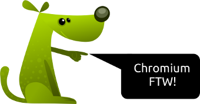

27 maja 2013 r. minie dziesięć lat od pierwszego wydania systemu WordPress. Z tej okazji na całym świecie będą się odbywać spotkania entuzjastów WP.
Tag Archive | "Blogowanie"

Tags: 10 lat, 10 lat wordpressa, Blog, Blogowanie, rocznica, wordpress
10ta rocznica pierwszego wydania systemu WordPress
Posted on 07 maja 2013 by Franek

Tags: Blogowanie, linki, opinie o seopilot, pozycjonowanie, seo, seopilot, seopilot opinie, seopilot.pl, wymiana linków, zarabiaj na stronie, zarabianie na stronie
Seopilot z punktu widzenia pozycjonera
Posted on 13 listopada 2012 by Franek
Wspominałem już dwukrotnie na blogu o Seopilot (tutaj i tutaj), w gruncie rzeczy przedstawiałem serwis w pozytywnym świetle. Dzisiaj chciałem przedstawić swoją opinię z drugiej strony barykady, czyli ze strony pozycjonera. Czytaj dalej »
Tags: Blog, Blogowanie, NibyBlog
Jak szybko ładuje Ci się NibyBlog.pl?
Posted on 11 lipca 2012 by Franek
Dzisiaj zoptymalizowałem trochę kod templatki bloga, wywaliłem zbędny kod od rzeczy których nie używam. Mam nadzieję, że przyśpieszyło to ładowanie bloga. Piszę o tym dlatego, że ostatnio wyłączyłem cache i chyba jest trochę wolniej. Czytaj dalej »

Tags: Blogowanie, seopilot, seopilot opinie, seopilot.pl, wymiana linków, zarabiaj na stronie, zarabianie na blogu, zarabianie na stronie
Jest piniondz z SeoPilot.pl
Posted on 24 czerwca 2012 by Franek
Pisałem już kiedyś o SeoPilot.pl, gdzie przedstawiałem go w dobrym świetle. Nie będę powielał tamtej treści, wspomnę tylko o tym, że SeoPilot.pl oferuje stały, comiesięczny, wysoki oraz stabilny zysk ze sprzedaży powierzchni reklamowej na blogach czy forach. Ale czy tak jest nadal? Czytaj dalej »

Tags: Blogowanie, linki, seo, seopilot, seopilot.pl, wymiana linków, zarabiaj na stronie, zarabianie na stronie
Zarabiaj na swojej stronie dzięki SeoPilot.pl
Posted on 27 lutego 2012 by Franek
Nowszy wpis z aktualną opinią o SeoPilot.pl.
Od niedawna w Polsce dostępny jest nowy system sprzedaży linków i pozycjonowania stron SeoPilot.pl. Serwis ten wydaje się idealny dla wszystkich osób które chciałyby zarabiać na swoich stronach internetowych. Nie ma banerów ani animacji, w sprzedawanej powierzchni reklamowej umieszczane są linki tekstowe, a sam SeoPilot.pl gwarantuje stały miesięczny dochód. Brzmi świetnie prawda?
To co wyróżnia SeoPilot.pl od innych systemów sprzedaży linków to fakt iż dostajemy gwarantowane wynagrodzenie za sam fakt umieszczenia widgetu na stronie. Nie trzeba martwić się o to czy sprzedany zostanie tylko jeden link, czy cały czas będą zajęte wszystkie trzy miejsca w widgecie i zarobimy tyle na ile wcześniej dana strona została wyceniona.
W SeoPilot.pl zysk generowany przez sprzedaż linków naliczany jest codziennie w skali miesiąca. Zarobione pieniądze można wypłacać w każdym momencie, minimalna kwota wypłaty to 50 złotych pojawia się na koncie już po 24 godzinach od momentu zlecenia wypłaty.
Dodatkowo SeoPilot.pl oferuje bonus za rejestrację, jednorazowy bonus w wysokości od 200 do 1000 złotych zależny jest od PageRank serwisu. Wiadomo im większy PR tym większy bonus.
O projekcie
System SeoPilot.pl to potężny kompleks, przeznaczony do pozycjonowania serwisów WWW w wyszukiwarkach internetowych, a także zaawansowane narzędzie do zarabiania pieniędzy w Internecie.Nowe możliwości optymalizacji pod kątem wyszukiwarek
Podczas tworzenia systemu SeoPilot.pl, opartego na szerokiej skali eksperymentach i analizie otrzymanych danych, potrafiliśmy określić najbardziej optymalne sposoby pozycjonowania. Potwierdzono, że zaawansowane algorytmy zakupu linków o wiele bardziej przewyższają tradycyjne metody pozycjonowania i dają świetne wyniki. Jednakże podstawowym technologicznym przełomem dla Pozycjonerów stała się automatyzacja procesu pozycjonowania serwisu internetowego. Pracując w systemie SeoPilot.pl, znika konieczność żmudnej i rutynowej pracy przy doborze powierzchni reklamowych. Ponadto wykrycie poprawnych schematów pozycjonowania dla specjalisty SEO jest w trudne ze względu na ogromne zatraty pracy i finansów na analizę danych.
Podsumowując SeoPilot.pl oferuje nam stały, comiesięczny, wysoki i stabilny zysk, który możemy uzyskać ze sprzedaży powierzchni reklamowej na stronach, forach czy blogach.

Tags: Blog, Blogowanie, NibyBlog
NibyBlog.pl szuka współpracowników
Posted on 24 lutego 2012 by Franek
NibyBlog.pl postanowił poszukać kogoś do pomocy przy prowadzeniu bloga. Dlatego szuka blogerów lub osoby które chciałby by pisać o Linuxie i tematach około Open Sourcowych.

Tags: Blog, Blogowanie, NibyBlog
NibyBlog.pl świętuje trzecie urodziny
Posted on 27 stycznia 2012 by Franek
Wpis ten został opublikowany dokładnie trzy lata po uruchomieniu domeny www.nibyblog.pl. Trzecia rocznica założenia bloga moim zdaniem jest powodem do świętowania, chociaż wszelakie powody do “świętowania internetowego” zostały nam odebrane przez podpisanie ACTA.

Tags: bb, blackberry, Blog, Blogowanie
Testowy wpis
Posted on 23 stycznia 2011 by Franek
Jest to testowy wpis pisany z terminala BlackBerry. Moze pora wrocic do blogowania bo klawiatura jakas taka zakurzona 0.o
Czytaj dalej »
Tags: aplikacja tumblr linux, Blogowanie, Gentoo, Grumblr, Mikroblogowanie, Tumblr, tumblr aplikacja, tumblr desktop, tumblr linux, tumblr progam
Grumblr desktopowa aplikacja do mikroblogowania na Tumblr
Posted on 12 października 2010 by Franek
Na świecie jak i również w Polsce coraz bardziej popularne stają się serwisy które umożliwiają tak zwane mikroblogowanie. Większość ludzi dostrzegło potencjał płynący z tych platform. Dzięki nim można łatwo można śledzić poczynania znajomych jak i informacje, jak również dzielić się linkami, zdjęciami, filmami czy przemyśleniami. Chyba większość osób zna Twittera. Istnieją również inne popularne platformy posiadające ciekawe funkcjonalności. Jednym z takich serwisów jest Tumblr.

Tags: Blog, BlogDay, BlogDay 2010, Blogowanie
BlogDay 2010
Posted on 31 sierpnia 2010 by Franek
Krótko i na temat. Dzisiaj jest BlogDay. Jest to niewątpliwie ważne, coroczne wydarzenie odbijające się szerokim echem w blogosferze. Z tej okazji chciałem Wam przedstawić kilka blogów. Nie chcę promować znanych blogów, bo po co? One są już dobrze wypromowane :P Oto one, są to blogi moich sieciowych znajomych:

Tags: Blog, Blogowanie, NibyBlog
Setny wpis!
Posted on 22 sierpnia 2010 by Franek
Była mroźna niedziela, pamiętny dzień 25 stycznia roku Pańskiego 2009. Spędzałem ten dzień samotnie, siedziałem w domu i strasznie się nudziłem. Nic się nie działo, nawet pies spał. W “moim Internecie” również cisza, błoga cisza. Nikt się nie odzywał i nie zagadywał nawet na Jabberze, a na moje ulubione forum nie mogłem iść ponieważ zostałem zeń wygnany po kłótni z moderatorem, mniejsza o to… Przeglądałem i czytałem więc różne blogi i planety w poszukiwaniu ciekawych informacji. Wtem w mojej głowie narodził się pomysł! Może by tak założyć bloga? Eee ale przecież ja nie umiem ładnie pisać, zdarza się też że robię błędy ortograficzne, a poza tym przecież nie jestem jakimś ekspertem, o czym miałbym pisać, i jak? Tylko biłem się z własnymi myślami by po chwili zdecydować się na założenie bloga. Przecież będę go prowadził dla siebie, bo pewnie nikt i tak nie będzie go czytał, więc nie musi być jakiś super i profesjonalny, w końcu to mi frajdę ma sprawiać jego prowadzenie.
Tags: Blog, Blogowanie, NibyBlog
MiniBlog: Zmiany na blogu
Posted on 18 kwietnia 2010 by Franek
Zmieniłem skórkę, oraz pozmieniałem tu to i owo. Mam nadzieję, że nowy szablon, jest lepszy od poprzedniego, myślę że jest bardziej funkcjonalny :) Ale nowy wygląd to nie wszystko, zamierzam wrócić do pisania, bo mam już “trochę” zaległości ;) mam nadzieję, że nowe wpisy będą pojawiały się częściej.
Tags: Blogowanie, Gwibber, Mikroblogowanie, Programy, Serwisy sołecznościowe
Klient mikroblogowania Gwibber: instalacja
Posted on 25 marca 2009 by Franek
Różne serwisy społecznościowe, oraz takie umożliwiające tak zwane mikroblogowanie stają się coraz bardziej popularne. Twitter, Facebook, czy Flickr – chyba każdy zna te serwisy, są one znane na całym świecie, a ostatnio zdobywają coraz więcej użytkowników również w Polsce. Zarządzanie kontami z poziomu www, nie zawsze jest wygodne i efektywne, dlatego między innymi powstał Gwibber.
Czym jest Gwibber? Jest to klient mikroblogowania napisany w Pythonie i GTK dla GNOME, jest rozpowszechniany na zasadach Open Source. Obsługuje kilka znanych serwisów takich jak: Twitter, Jaiku, Identi.ca, Facebook, Flickr, Digg, jest również czytnikiem RSS/Atom. A już wkrótce, będzie obsługiwał Blip.pl, jak widać na zrzucie, u mnie już działa. ;) Czytaj dalej »

-
ARCHIWUM
- wrzesień 2022 (1)
- grudzień 2013 (1)
- listopad 2013 (2)
- wrzesień 2013 (1)
- czerwiec 2013 (1)
- maj 2013 (4)
- kwiecień 2013 (4)
- marzec 2013 (1)
- luty 2013 (1)
- styczeń 2013 (1)
- grudzień 2012 (15)
- listopad 2012 (7)
- październik 2012 (4)
- wrzesień 2012 (4)
- sierpień 2012 (7)
- lipiec 2012 (19)
- czerwiec 2012 (3)
- maj 2012 (1)
- kwiecień 2012 (5)
- marzec 2012 (4)
- luty 2012 (12)
- styczeń 2012 (13)
- grudzień 2011 (10)
- listopad 2011 (6)
- październik 2011 (2)
- wrzesień 2011 (1)
- sierpień 2011 (2)
- lipiec 2011 (2)
- czerwiec 2011 (8)
- maj 2011 (32)
- kwiecień 2011 (11)
- marzec 2011 (10)
- styczeń 2011 (2)
- listopad 2010 (4)
- październik 2010 (12)
- wrzesień 2010 (17)
- sierpień 2010 (32)
- lipiec 2010 (10)
- czerwiec 2010 (3)
- maj 2010 (7)
- kwiecień 2010 (8)
- lipiec 2009 (5)
- czerwiec 2009 (2)
- marzec 2009 (15)
- luty 2009 (21)
- styczeń 2009 (5)